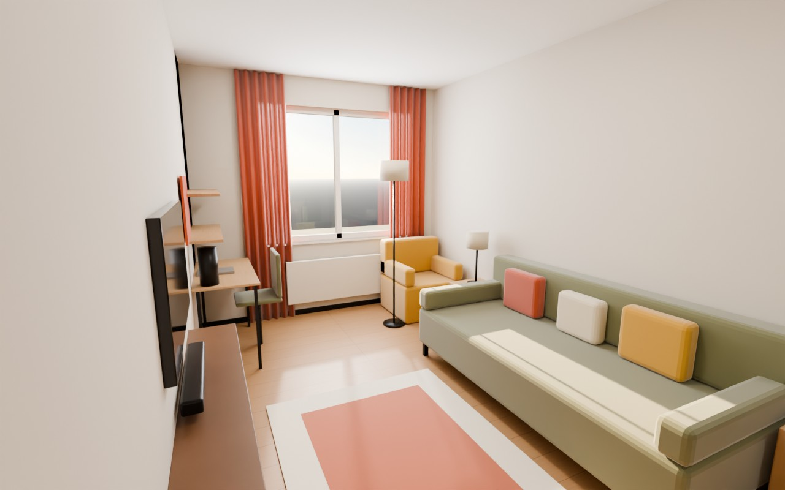
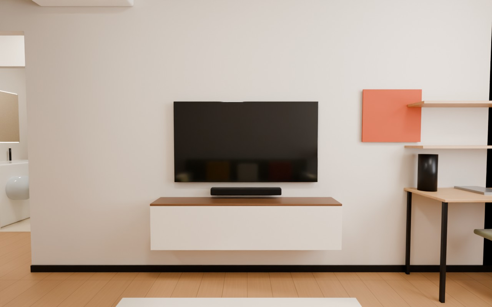
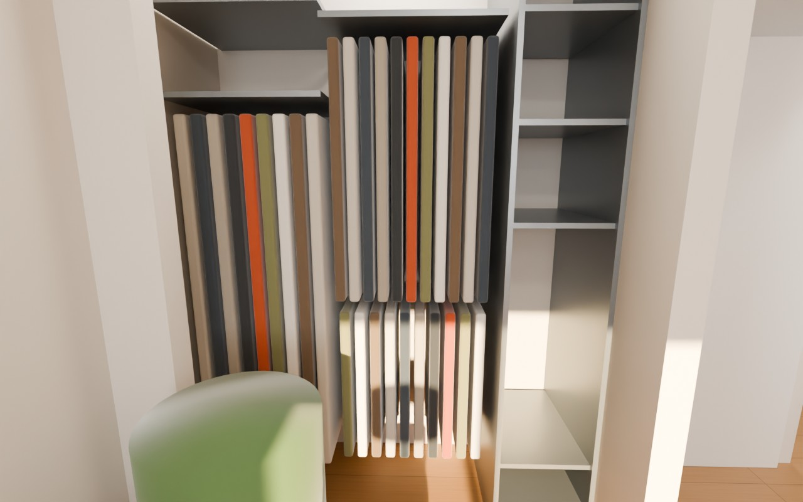
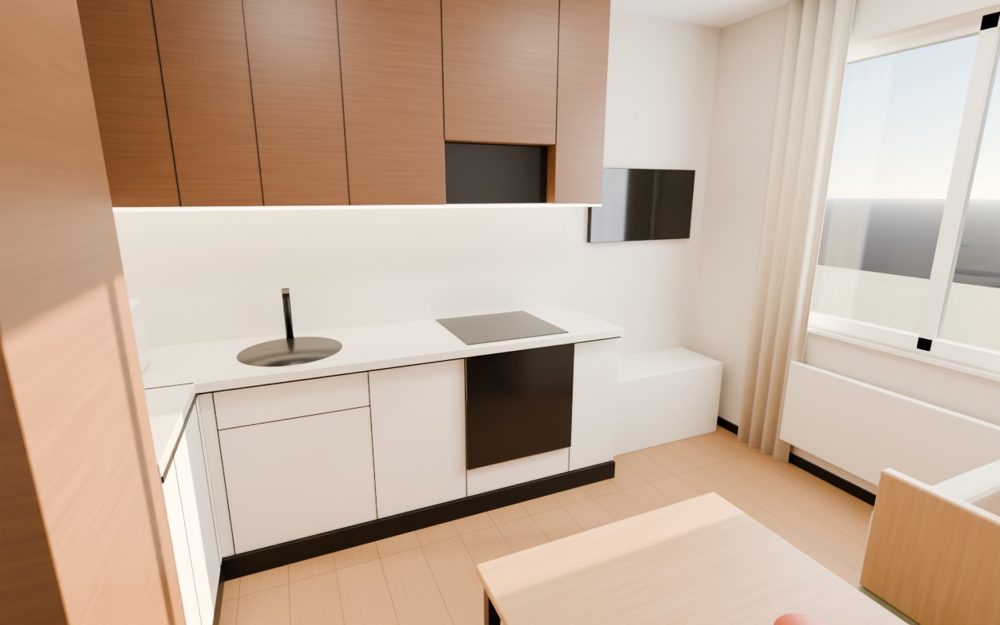
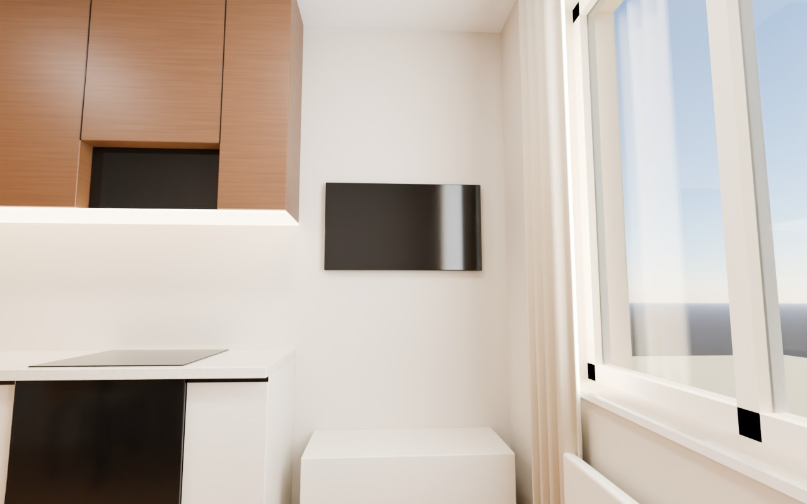
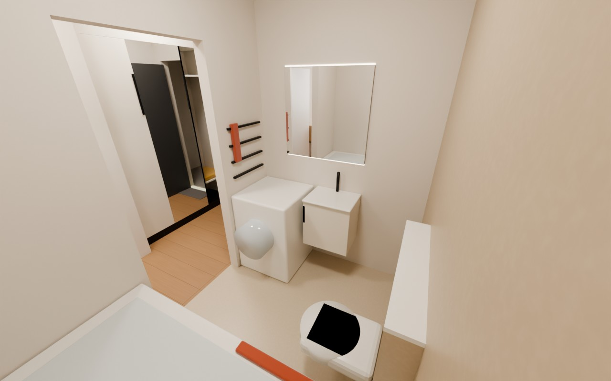
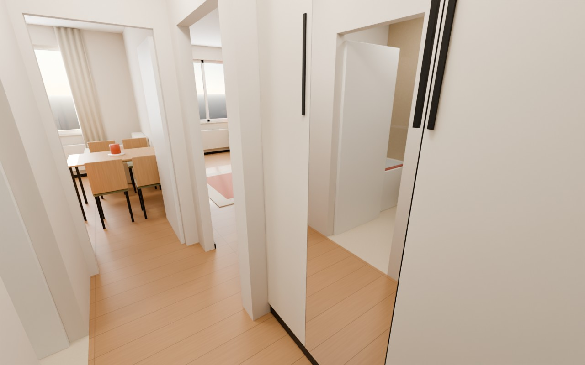

Кадры отрисованы по тем же размерам, что и дизайн-проект. Свет из окон, тени и отражения настоящие, материалы подобраны по палитре проекта.

КомнатаОливковый диван 2200 между тумбами, терракотовые шторы, горчичное кресло у окна, стол 1100×500 у стены.

Вид с диванаТВ 55″, подвесная тумба 1500×270 на высоте 300, рабочее место справа.

ГардеробнаяСетчатая система: колонна полок и корзин, две секции со штангами. Складные двери открыты.

КухняБелый низ, орех наверху до потолка, наклонная вытяжка Zibal, мойка у угла, подсветка под шкафами.

Кухня с креслаТВ 37″ на поворотном кронштейне над тумбой 900, льняные шторы.

СанузелПодвесной унитаз на коробе, тумба 450 с зеркалом 800×800, стиральная машина, полотенцесушитель.

ПрихожаяШкаф с зеркальной дверью справа, впереди коридор в кухню и комнату.
Это рендер по проекту, а не фотография. Фактуры (дерево, ткань, камень) сделаны процедурно, без фототекстур. Реальные оттенки отделки и ткани сверяйте по образцам. Размеры и расстановка точные.